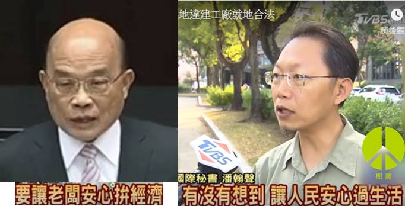
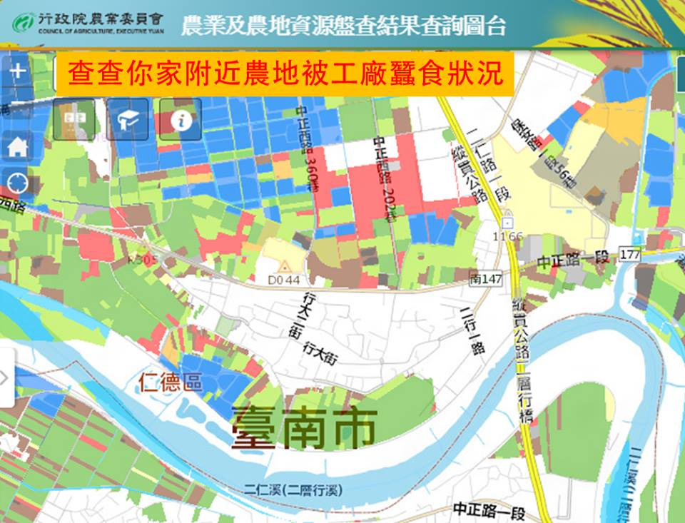

原文： 潘翰聲於自由廣場投書
《工廠管理輔導法》第三十三條規定臨時登記工廠合法期限將於明年六月二日到期落日，但七四三八家當中僅有五十二家轉型合法。行政院和民進黨立院黨團將此列為本會期優先法案進行修法，蘇貞昌院長在答詢時宣示三點，要讓老闆「安心拚經濟」，但若讓違章工廠散落在農地之間永久化，能否同時兼顧到，讓人民「安心過生活」，保有乾淨的空氣、乾淨的水、乾淨的食物，工人可以安心去上班、安心回到家。

去年農委會全面普查六萬多家違章工廠位置公告上網，共佔地一．三萬公頃，違章工廠長期蠶食農地，嚴重污染水源和農地，是食物安全問題的環境結構因素。土地管理的失控，也造成地方居民空氣污染、噪音，和隨之而來的交通、爆炸等風險。工業區內的合法企業也不平，這些違章工廠不用負擔環境成本，形成不公平競爭。
經濟部在二○一二年，劃定一八六個特區來輔導七一七家工廠走向合法，二○一六年底天下雜誌調查上網，有許多在國際供應鏈上佔獨特地位的「隱形冠軍」，其中甚至有無塵室，形成產業聚落，包括新北市的金屬加工、台中工具機、彰化水五金、高雄螺絲，法規若貿然落日失效將丟失訂單，確實會對經濟產生巨大連鎖衝擊。但政府對違章工廠的掌握相當有限，加上多年來「立法嚴格、執法寬鬆」的狀況，這般歷史共業無法簡單一刀切，考驗著政府的治理能力，和人民的共同體責任感。
蘇貞昌的第一點宣示不准新設，喊來有魄力，要不顧選票貫徹到底卻很難。民進黨上台後冒出一萬家新增違建，中央政府列管重大案件二八六家只拆十七家。最積極執行的台中市政府，連原本支持者找議員關切都鐵面無私照樣拆除，這讓林佳龍流失不少中小企業主的選票，但捍衛農地和法治的政績，卻未在選戰中凸顯。對照彰化縣，在選舉期間國、民兩黨就此互相較勁，今年初環保團體檢舉十二件新案，縣府竟說沒有人力，要有污染、公安問題才拆。

政府的執法能力令人質疑，就像都市的違建，每次都設下大限，但仍無法遏止新增違建，農地違建有何辦法擋得住。因此，蘇貞昌第二點要取消臨登工廠落日期限，恐怕將覆水難收管不住違章工廠。而第三點關於長期群聚的就地合法，則要有可行的財務機制讓業者美夢成真，同時也要合理補償公共利益的損害，並讓這筆第一桶金滾動全面性的改革。
違章工廠是歷史共業，難得執政黨願意著手處理，做得好人民也會鼓勵支持。這不是單純的經濟和環保的對立，過度潔癖的完全反對就地合法，可能反而導致全面解禁。這些違章工廠的資訊正逐漸攤在陽光下，問題的實況日益清晰，台灣的經濟和環境如何轉型升級，考驗著全民的智慧。